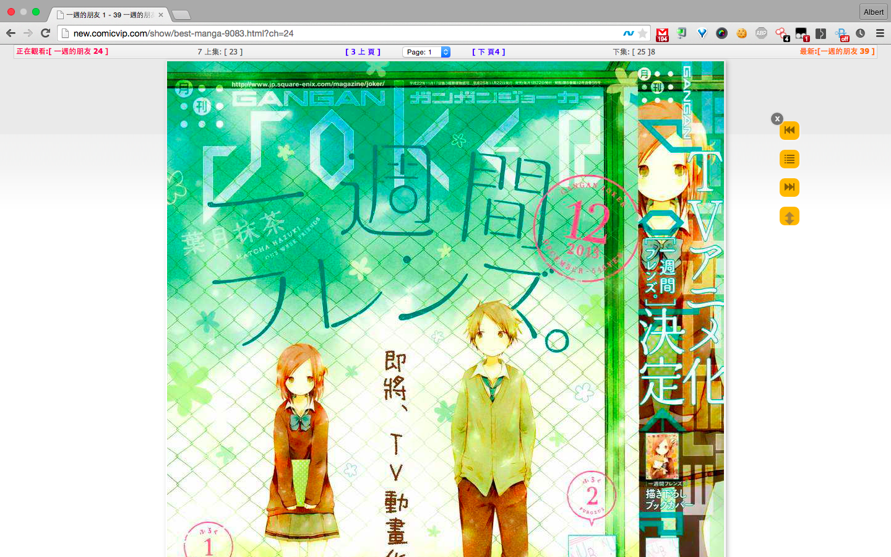

8comic-viewer
A userscript for convenient viewing 8comic.
View the Project on GitHub
knowlet/8Comic-Viewer
Download
ZIP File
Download
TAR Ball
View On
GitHub
8Comic Viewer - 無限動漫懶人閱讀器
這是一個設計給喜歡在無限動漫上看漫畫的你們，沒有比這更懶惰的擴充功能了，自動翻頁、自動載入，你只需要看！

特色功能
漫畫自動載入
自動儲存閱讀章節
自動載入下本漫畫
支持自動捲動漫畫
廣告去除
安裝方法
Chrome
: 谷歌瀏覽器請先安裝
Tampermonkey
Firefox
: 火狐瀏覽器請先安裝
GreaseMonkey
Safari
: 請先安裝
Tampermonkey
IE
: 就算了吧你...
之後點擊這裡
here
進行安裝